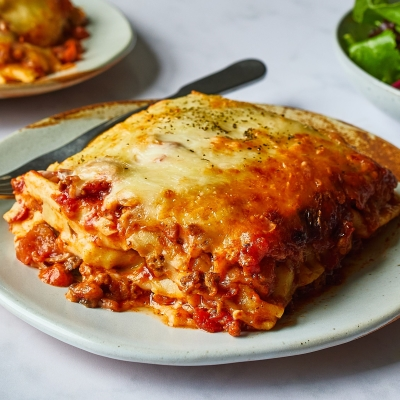

Lasagna

Description
Filling and easy to make, lasagnas are great one-dish meals that check all the boxes, as they can be filled with all sorts of veggies, sauces, and proteins, and can be adjusted to many special dietary needs.
Red and white sauce lasagna is a flavorful combination of a basic white sauce, rather than ricotta cheese, and a tomato-based sauce with beef and pork that's flavored with spices and mushrooms.
Covered in cheese and baked until golden, this is a great weeknight meal served with a simple salad and crusty bread.
I used oven-ready (also called no-boil) lasagna noodles to speed up the cooking time.
Simply assemble the lasagna with the uncooked noodles, seal it tight with foil, and bake.
As the sauce simmers, the noodles cook all on their own thanks in part to the moisture in the sauces.
The key is to keep the lasagna covered in the oven until the noodles are soft.
Removing the foil allows the upper layer of the lasagna to achieve an appetizing golden color.
The oven-ready noodles are also available in a gluten-free version if someone in your household has special dietary needs.
Ingredients
- For White Sauce
- 4 tablespoons butter
- 2 1/2 cups whole milk
- 1/3 cups all purpose flour
- 1/2 teaspoon salt, or to taste
- For Red Sauce
- 2 tablespoons olive oil
- 1 medium onion, chopped
- 6 to 8 white mushrooms, sliced
- 3 cloves garlic, chopped
- 2 (28-ounce) cans tomato sauce
- 2 teaspoons dried oregano
- 2 teaspoons dried basil
- Salt, to taste
- Black pepper, to taste
- For Assembling
- 1 package oven-ready lasagna noodles
- 2 cups shredded mozzarella cheese
- 1/2 grated parmesan cheese
Steps
- Make the White Sauce
- Gather the ingredients.
- Melt the butter in a heavy-bottomed saucepan.
- Warm up the milk in a small saucepan, but don't let it boil.
- Add the flour to the melted butter and stir to form a roux. Cook for about 2 minutes.
- Slowly whisk in the warm milk, stirring well to get rid of any flour lumps. Season with salt.
- Turn off the heat and reserve, covered.
- Make the Red Sauce
- Gather the ingredients.
- In a large skillet or heavy-bottomed saucepan, heat up the olive oil.
- Cook for approximately 8 minutes.
- Add the onion to the skillet with the reserved fat and sauté until translucent, for about 6 to 7 minutes.
- Add the mushrooms and garlic to the skillet and cook until the mushrooms are soft, or 5 minutes.
- Add the tomato sauce and dried herbs to garlic and onions. Stir well.
- Bring the sauce to a simmer and cook for another 5 minutes, stirring occasionally. Remove the red sauce from heat and season to taste with salt and black pepper.
- Assemble the Lasagna
- Gather the ingredients.
- Preheat the oven to 400 F. In a 3-quart ovenproof baking dish, ladle enough of the red sauce to cover the bottom of the baking dish.
- Arrange a layer of pasta atop the red sauce and then another layer of red sauce.
- Drizzle roughly 1/3 of the white sauce evenly atop the red sauce.
- Repeat the previous step twice by layering layers of pasta, red sauce, and white sauce.
- Spread the shredded mozzarella on top of the final white sauce layer.
- Sprinkle the grated Parmesan on top of the mozzarella.
- Cover the dish tightly with foil and bake for 40 minutes.
- After 40 minutes, remove foil and bake for about 10 more minutes, or until the cheese on top has browned slightly. Remove lasagna from oven and let rest for 10 minutes.
- Serve and enjoy!
Home Page